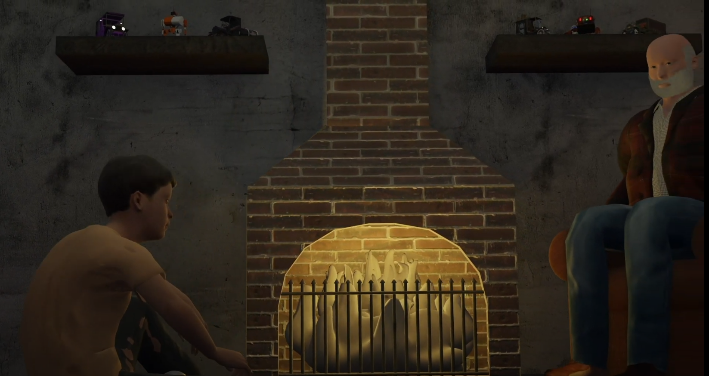

Ex Nihilo
Un projet d'animation par :
Audrey Langlois, Jean-Marie Gariépy et Roméo Girard
Description du projet :
Un projet d'animation dont je me suis occupé à créer l'environnement complet
des deux scènes, à l'exception de l'horloge. J'ai ensuite fait une partie de
l'animation pour ensuite créer le résultat final (à voir tous les crédits à la
fin de l'animation).